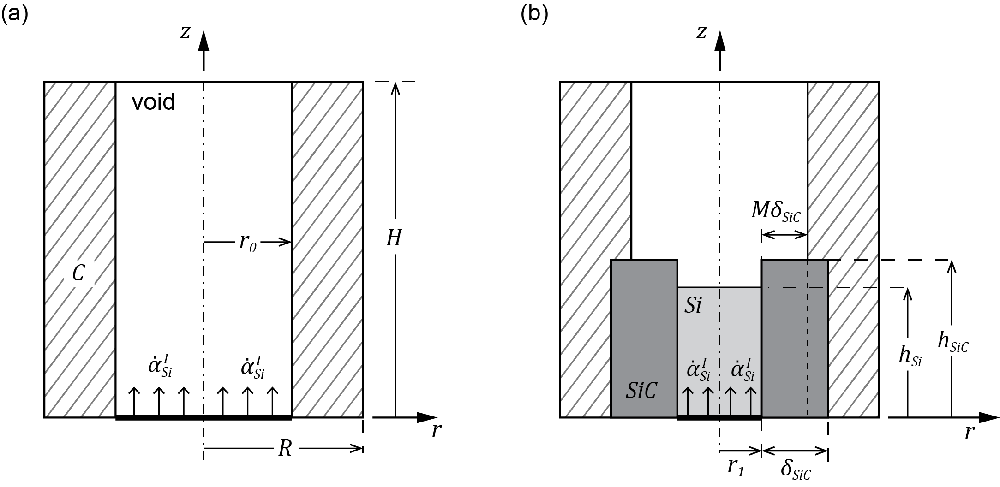

- Generated by
 1.10.0
1.10.0
|
NEML2 2.0.0
|
The liquid infiltration physics module is a collection objects serving as building blocks for composing material chemical and physical interaction between the solid ( \(S\)), infiltrated by liquid ( \(L\)) to create a product ( \(P\)) at the solid-liquid interface. The framework and usage of the model is explained below, with both mathematical formulations and example input files.
The infiltration process for a material considers a cylindrical Representative Volume Element (RVE) with radius R and height H depicts a Solid capillary of radius \(r_0\), corresponding to the initial porosity of \(\sqrt{\varphi_0}\). The mathematical description of the model uses cylindrical coordinates and assumes axisymmetry around \( r = 0\). Figure below depicts the schematic for the RVE.
The span of Liquid and the span of the Product layer are denoted by \(h_L\) and \(h_P\), respectively. In addition, define \(\alpha_i\) as the amount of substance in the RVE and \(\Omega_i\) as the molar volume (SI units: mol per volume), with subscripts taking \(L\), \(S\), and \(P\) representing the infiltrated Liquid, the porous material Solid, and the Product produces by the chemical interaction between the Liquid and the Solid, respectively.

Key assumptions made throughout the derivation are:
The model consists of many sub-models that are general such that developers can swap out different chemical interactions for suitable liquid-solid systems.
The following nondimensionalization is applied to the constitutive model (Fig. 1) for the reactive infiltration process.
\[ \begin{equation} \begin{aligned} &\ \bar{\delta}_P = \frac{\delta_P}{R}, \quad \bar{r}_0 = \dfrac{r_0}{R} = \sqrt{\varphi_0}, \quad \bar{r}_1 = \dfrac{r_1}{R} = \sqrt{\varphi_0} -M\bar{\delta}_P \\ &\ \bar{h}_P = \frac{h_P}{H}, \quad \bar{h}_L = \frac{h_L}{H}=\frac{\alpha_L\Omega_L}{\bar{r}_1^2}. \end{aligned} \end{equation} \]
The complete state of the RVE is therefore denoted by the tuple \(\left( \alpha_L, \bar{\delta}_P^*, \bar{h}_P \right)\), where \(\bar{\delta}_P^* = \sqrt{\bar{\delta}_P}\).
The use of \(\bar{\delta}_P^*\) is to ensure physical solution for \(\bar{\delta}_P\)
The effective porosity can be written in terms of the nondimensional variables as
\[ \varphi = \bar{r}_0^2 \left( 1 - \bar{h}_P \right) + \bar{r}_1^2 \left( \bar{h}_P - \bar{h}_L \right). \]
where
\[ \bar{h}_L = \dfrac{\Omega_L \alpha_L}{\bar{r}_1^2} \]
Finally, the composition of the solid is:
\[ \alpha_S = \frac{1}{\Omega_{S}}(1-\varphi - \alpha_P\Omega_P - \alpha_L\Omega_L) \]
The following constraints apply to the reaction constitutive model:
\[ r_1 \ge 0 \]
When \(r_1=0\) , no liquid can enter the RVE, i.e. \(\dot{\alpha}_L^I=0\). Therefore, the simulation is halted.\[ \bar{\delta}_P \le \min\left(\dfrac{1-\sqrt{\varphi_0}}{1-M },\dfrac{\sqrt{\varphi_0}}{M}\right)=\bar{\delta}_P^c. \]
Here, within our assumption that the silicon carbide wall thickness remains uniform during the infiltration, Product layer only grows in the \(+z\) direction. The reaction equation becomes\[ \dot{\bar{\delta}}_P = 0 \]
\[ \bar{h}_P \le 1. \]
Since \(\bar{h}_P\) is irreversible, \(\bar{h}_P = 1\) corresponds to \(\bar{\dot{h}}_P = 0\), implies\[ \dot{\alpha}_L^O = \dot{\alpha}_L^I \]
where the injection rate of Liquid \(\dot{\alpha}_L^I\) is prescribed. \(\dot{\alpha}_L^O\) represents the outflow of Liquid \(\dot{\alpha}_L^O = 0\) for \(h_L<1\).
When including the constraint, the initial-value problem (IVP) corresponding to the constitutive model is
The growth of Product thickness in the \(\pm r\) direction (ProductThicknessGrowthRate model),
\[ \dot{\bar{\delta}}_P = R(\bar{h}_L,\bar{h}_P) G \left[1-H\left(\dfrac{\bar{\delta}_P}{\bar{\delta}_P^c}-1 \right)\right] \]
Here \(G\) denotes the thickeness growth of the Product when Liquid in abundant. When the Liquid is deficient, the Product's thickness growth is reduced by a factor of \(R\). \(H(x)\) is a Heaviside function.
For the current implementation,
\[ R(\bar{h}_L,\bar{h}_P) = \left\{\dfrac{\bar{h}_L}{\bar{h}_P}\right\}^p \]
with \(\{.\}\) denotes the Macaulay brackets to ensure \(\left(\dfrac{\bar{h}_L}{\bar{h}_P}\right)^p\) has real values. This is done with LiquidDeficientPowerScale model.
and
\[ G = \bar{D} \frac{\rho_L}{\rho_P} \frac{\bar{r}_1} {\bar{\delta}_P\left[\sqrt{\varphi_0}+(1-2M)\bar{\delta}_P\right]} \]
with \(\rho_L, \rho_P\) denotes the density of Liquid and Product respectively. \(G\) is derived based on 1D diffusion of Liquid through the Product to react with the Solid at the Solid-Product interface, accounting for the polar coordinate system of the RVE. This is done with LiquidProductDiffusion1D model.
ProductGrowthWithLiquid model) \[ \phi = \bar{r}_1^2 \bar{h}_P - \alpha_L\Omega_L \geq 0, \quad \dot{\bar{h}}_P \geq 0, \quad \phi \dot{\bar{h}}_P = 0, \]
This is equivalent to the Fischer-Burmeister complementary condition (FischerBurmeister model), \[ \phi + \dot{\bar{h}}_P - \sqrt{ \phi^2 + \dot{\bar{h}}_P^2 } = 0 \]
ChemMassBalance model) \[ \dot{\alpha}_L = \dot{\alpha}_L^I + \dot{\alpha}_L^R +\dot{\alpha}_L^O \]
where\[ \dot{\alpha}_L^R = \dot{\alpha}_S = -\dot{\alpha}_P \]
This is done with Composing two models:ProductGeometricRelation and VariableRate.An implicit time integration scheme is required to solve this stiff IVP with a reasonable time step size. This is done with ImplicitUpdate model.
A complete example input file for the Liquid Infiltration is shown below with all of the appropriate composition models. The parameters are chosen to reflect liquid Silicon infiltrated a porous Carbon with Silicon Carbide as a product.
These sub-models are built in order to solve the IVP - 3 equations with 3 unknowns \(\left( \alpha_L, \bar{\delta}_P^*, \bar{h}_P \right)\), where \(\bar{\delta}_P^* = \sqrt{\bar{\delta}_P}\). For details input and output of each model, refer to the Syuntax Documentaion.
CAUTION: The state variable for all of these models is \(\bar{\delta}_P^*\)!
Model object: InletGap
This model calculates the inlet size of the RVE, following
\[ \bar{r}_1 = \sqrt{\varphi_0} -M{\bar{\delta}_P^*}^2 \]
Example input file that defines the size of the inlet.
Model object: SwitchingFunction
A smooth heaviside function of \(x\) of the form \(g\left(\dfrac{x}{x_c} - x_0\right)\). The current implementation is Sigmoid,
\[ g = \frac{1}{2}+\frac{1}{2}\tanh{\left[n\left(\dfrac{x}{x_c}-x_0\right)\right]} \]
For use in the liquid infiltration, make sure to use the \(1-g\) by settting
one_subtract_condition = True.
Example input file that defines the constraint functions.
Model object: ProductGrowthWithLiquid
When there is sufficient Liquid, the span (height) of the Product and and Liquid is equal. In addition, the flat liquid front is assumed. Based on geometric relation, these imply the relationship through output variable \(\phi\) as,
\[ \phi = \bar{r}_1^2 \bar{h}_P - \alpha_L\Omega_L \]
Example input file that defines the Product height growth with Liquid front.
Model object: FischerBurmeister
If \( a \ge 0, b \ge 0, ab = 0 \) then Fischer-Burmeister complementary condition is
\[ a+b-\sqrt{a^2+b^2} = 0 \]
For use in liquid infiltration, condition_a is
ProductGrowthWithLiquidand condition_b isVariableRateof a state variable corresponding to Product's height. The output of the model is one of the residual for the IVP.
Example input file that defines the Fischer-Burmeister condition.
Model object: ProductThicknessLimit
The product's maximum thickness governs by the growth condition \(M\) and the amount of Solid to react with, aka initial porosity, \(\varphi\) (see Fig. 1). Based on geometric relation,
\[ \bar{\delta}_P^c = \min\left(\dfrac{1-\sqrt{\varphi_0}}{1-M },\dfrac{\sqrt{\varphi_0}}{M}\right). \]
Example input file that defines the maximum Product thickness.
Model object: LiquidProductDiffusion1D
Assuming quasi steady state of Liquid infiltration, consider the same RVE as in Fig. 1 with a constant \(h_P\), the mass \(m_P\) of the product is,
\[ \begin{align} m_P = \rho_PV_P = \rho_P\pi ((r_1+\delta_P)^2-r_1^2)h_P \\ \dot{m}_P = 2\rho_P\pi h_P(r_0+(1-2M)\delta_P)\dot{\delta}_P \end{align} \]
Product grows due to the diffusion between the Liquid-Product interface and Product-Solid interface, with a diffusion coefficient \(D\). Then,
\[ \dot{m}_P=D\nabla C \cdot \boldsymbol{n} \]
where \(C\) is the mass concentration, \(\boldsymbol{n}\) is the normal vector. Assuming Liquid reacts immediately with Solid at the Product-Solid interface, i.e. the concentration of Liquid (with molar mass \(M_L\)) at the Product-Solid interface is zero, then
\[ \dot{m}_P = 2D \pi r_1 h_P \frac{\rho_L}{\delta_P} \]
Combining, the Product thickness height growth, in abundance of Liquid, is
\[ \dot{\delta}_P = D \frac{\rho_L}{\rho_P} \frac{r_1}{\delta_P(r_0+(1-2M)\delta_P)} \]
Equivalently in normalized units,
\[ {\dot{\bar{\delta}}_P^*} = \dfrac{D}{l_c^2} \frac{\rho_L}{\rho_P} \frac{\bar{r}_1} {2{\bar{\delta}_P^*}^3\left[\sqrt{\varphi_0}+(1-2M){\bar{\delta}^*_P}^2\right]} \]
Example input file that defines the ideal Product thickness growth.
Model object: LiquidDeficientPowerScale
When the Liquid in the RVE is insufficient to sustain the Product's thickness growth, the Product's thickness growth rate decreases from the ideal condition by a factor \(R\) as
\[ R = \left\{\dfrac{\bar{h}_L}{\bar{h}_P}\right\}^p = \left\{\dfrac{\alpha_L \Omega_L}{\bar{r}_1^2 \bar{h}_P}\right\}^p \]
with \(\{.\}\) denotes the Macaulay brackets to ensure \(\left(\dfrac{\bar{h}_L}{\bar{h}_P}\right)^p\) has real values. Note that when Liquid is sufficient, aka \(\bar{h}_L = \bar{h}_P\), then \(R = 1\).
Example input file that defines the power scale reduction scaling for Product thickness growth when Liquid is deficient.
Model object: ProductThicknessGrowthRate
The total effective combination of the product thickness growth rate, combining the ideal_thickness_growth ( \(R\)) with scale( \(S\)) to account for liquid deficiency and switch( \(H\)) to limit the growth rate by a critical value.
\[ {\dot{\bar{\delta}}_P^*} - R S H = 0 \]
The output of the model is one of the residual for the IVP. To use for liquid infiltration, make sure to have
switchas an appropriateComposedModelbetweenProductThicknessLimitandSwitchingFunction. Refer to the Complete Input File under Framework section for example.
Example input file that defines effective Product thickness growth.
Model object: ProductGeometricRelation
Product's geometry dictates the amount of the Product in the RVE,
\[ \alpha_P = \dfrac{\bar{h}_P}{\Omega_P} \left( 2\bar{r}_1 {\bar{\delta}_P^*}^2 + {\bar{\delta}_P^*}^4 \right) \]
Example input file that defines the Product geometric relation with Liquid.
Model object: ChemMassBalance
The total mass balance of the Liquid in the RVE, subjecting to inlet rate \(\dot{\alpha}_L^I\), outlet rate \(\dot{\alpha}_L^O\) and reaction rate \(\dot{\alpha}_R^I\)
\[ \dot{\alpha}_L - \dot{\alpha}_L^I - \dot{\alpha}_L^O + (-\dot{\alpha}_L^R) = 0 \]
When \(\bar{h}_P < 1\), \(\dot{\alpha}_L^O = 0\). Therefore,
\[ \dot{\alpha}_L - S \dot{\alpha}_L^I + (-\dot{\alpha}_L^R) = 0 \]
with switch ( \(S\)) can be written from Heaviside function as
\[ S = 1 - H\left( \bar{h}_P -1 \right) \]
The output of the model is one of the residual for the IVP. To use for liquid infiltration, use
SwitchingFunctionmodel with appropriate input forswitch( \(S\)). Refer to the Complete Input File under Framework section for example.
Example input file that defines the Liquid total mass balance.